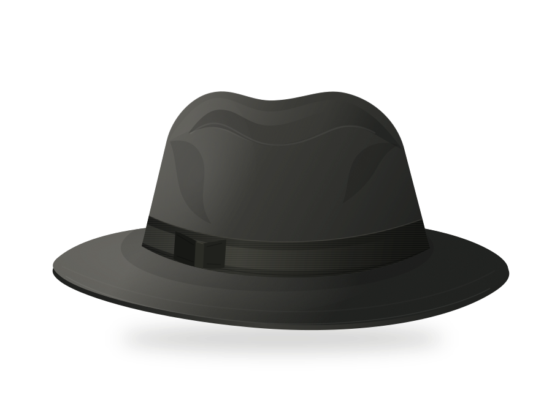

Этюд об одной шляпе
Дело
в шляпе.
Хорошая форма, немного характера
и цвет под настроение. Остальное
приложится.
Один силуэт.
Тысяча поводов его примерить.
Тысяча поводов его примерить.

ВАШЕ НАСТРОЕНИЕГрафит
ПРОСТАЯ ФОРМАСВОБОДНЫЙ ХАРАКТЕРВСЁ ДЕЛО В ДЕТАЛЯХ
Ничего лишнего
Меньше суеты.
Больше характера.
Иногда для настроения
достаточно одной детали.
- 01 Плавная тулья
- Тот самый узнаваемый силуэт.
Спокойный, но с собственным мнением. - 02 Широкие поля
- Немного тени.
Немного загадки. - 03 Последний штрих
- Лента, которая собирает всё воедино.
Потому что мелочей не бывает.